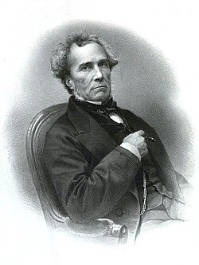
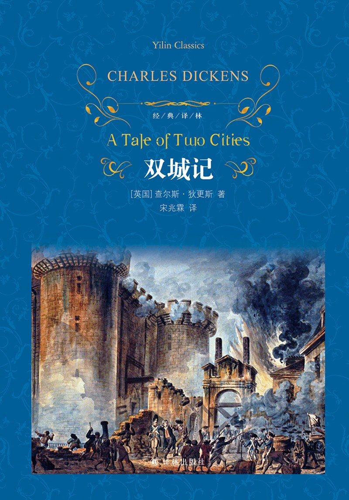
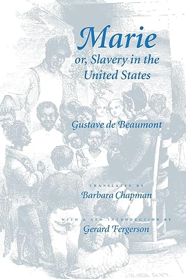

4. 民主与平等，是我们无法抗拒的未来
大家好，我是杨照。
当两个迷惘的文官决定出走
托克尔从法国去到美国，这个时代背景一定要提到的是法国大革命。将近半个世纪，但这个时候的法国看起来是一个失败的政治试验场。共和之后才十多年，平民拿破仑就凭着他的战功变成了皇帝。拿破仑失败了之后，波旁王朝复辟，路易十八上台，然后波旁王朝又再被推翻，换了另一个王室的路易·菲利（Louis Philippe I）来当国王。
欧洲人看得眼花缭乱，亲历这一切的法国人活得很迷惘、很痛苦。对二十几岁的法国年轻人来说，迷惘更深。他们无法预见国家的未来，也就无法安排自己的人生。好像不管怎么做、怎么准备，都没有把握，甚至有可能都是错的。
路易·菲利普上台，换了国王，却不可能换掉整个国家官僚体系，托克维尔仍然是这个体系当中的一员。然而，他原本对自己在这个体系当中会有的前途想象，却被打破了。从个人角度来看，他遇到了双重的困惑：作为一个文官，他究竟为谁效忠、为谁服务？还有，作为一个文官，他的未来在哪里？如何看待、处理自己的文官工作，才是对的、最好的选择？
这是个人的困惑。但除了这样的个人困惑，又多加上了时代的、更高层次的困惑：到底法国要有什么样的政治制度？法国乃至于全欧洲，如何能够找到一种稳定下来的方法，解决从大革命以来持续不断的动乱呢？
面对如此真实的生命困惑，托克维尔和他的一位好友培蒙特（Gustave de Beaumont），他们决定要暂时离开法国，离开这种让他们极为尴尬、不舒服的国家状况，到别的地方去寻找可能的答案、可能的解决。两个人商量、草拟了一个计划，要去美国调查美国的狱政，即监狱的状况。

古斯塔夫·德·培蒙特（Gustave de Beaumont，1802-1866），法国地方法官、监狱改革家，托克维尔的美国旅行同伴
为什么是调查美国狱政？因为托克维尔和培蒙特两人当时隶属于法国的司法系统，是司法体系里的基层职员，就必须找一个跟司法有关的题目。法国的监狱从大革命之后，从来都没有“正常”过。大家如有兴趣，可以读一下查尔斯·狄更斯（Charles Dickens）的小说《双城记》（Tales of Two Cities），那是对于法国监狱非常鲜活的描绘。当时法国人普遍的共识：大概任何什么国家的监狱，都比法国的监狱要来得好吧！去远在大西洋彼岸的美国调查狱政，这是一个合理的选择。

[英]查尔斯·狄更斯，《双城记》，宋兆霖译，译林出版社，2020年
而托克维尔和培蒙特两人是自费去做调查的，显见家里面有一定的资产。大老远去到美国不可能立刻就回来，所以他们心中藏着这样一个合理的期待：“说不定等我们回到法国时，路易·菲利这个政权也已经不在了吧！”
两个法国人，两种对美国的观照
他们两人在 1831 年 5 月 8 日从船上看到了美国国土，兴奋到睡不着觉，因而真正在罗得岛上岸后，什么都来不及参观，先睡了一整天。5 月 11 日，他们才从纽约正式展开他们的调查。
从那天起，到 1832 年 2 月 20 日两个人离开美国，当中的九个多月时间，他们走了很多地方，涵盖了当时美国大部分的国土。在密西西比河以东的各州，除了缅因（Maine）、新罕布什尔（New Hampshire）这几个州以外，其他的州都去到了。
回到法国，路易·菲利普还在王位上，这也就意味着政府没改变，他们的调查计划仍然有效。所以他们也就规规矩矩按照计划，将美国的狱政调查报告写出来了，仔细说明美国的种种做法，也的确对当时的法国狱政管理产生了相当的冲击。
不过在交完报告之后，两各人都越来越无法忍受当文官公务员的生活，这或许跟他们曾经有过九个月的美国浪游经验有关吧，两个人就先后离开了自己原来的工作。两个人在美国浪游的时候，曾经产生过一个想法，要在狱政报告之外，合作写另外一份报告，也许是一本书，内容是广泛地记录他们在美国的所见所思，让法国人能够了解美国究竟是一个什么样的国家。这个计划后来发生了变化，或许是两个人对美国的看法有很大的差距吧，合写后来变成了各自分别写。
托克维尔和培蒙特一直维持亲密的友谊关系，托克维尔去世之前，还指定了培蒙特担任他的著作遗产执行人，这个世界上出现的第一部托克维尔著作全集，就是培蒙特编辑的。两人很要好，没有吵架，但就是没办法一起写关于美国的著作。 也因为这样，培蒙特也就失去了和托克维尔享有同等历史名声的机会。
培蒙特后来将他在美国的见闻经验，写成了一部小说，书名是《玛丽，或美国的奴隶制度》（Marieou l'esclavage aux États-Unis）。这本书应该没有什么美国人看过，因为直到 1998 年才出版了英文译本。

Gustave de Beaumont, Marie or, Slavery in the United States, Johns Hopkins University Press, 1999
《玛丽》这部书写的是一位法国青年到了美国，爱上了一位美国女孩，就是书名里的玛丽。在爱情的冲动中，主角还去跟玛丽的爸爸提亲，希望能娶玛丽为妻。玛丽的爸爸没有答应，不是因为讨厌这位主角，更不是嫌他是法国人，而是出于好意，出于对主角的保，玛丽的爸爸偷偷跟主角透露了这样的秘密：玛丽不是纯种的白人，她妈妈身上带有黑人的血统，所以玛丽不可能嫁给纯种白人，被人家知道了，一定会带给那个人巨大的灾难。
主角不相信玛丽竟然有这样的血缘问题，更不相信跟玛丽结婚真的就会有灾难。在为难、犹豫间，他碰巧就在纽约街头遭遇了种族冲突事件，亲眼目睹白人对印第安人的歧视压迫，还有印第安人的反抗暴动。他大受震骇，匆忙地逃离了美国，回到法国去。
然而在法国，他仍然朝思暮想，无法忘怀玛丽。隔着大西洋，玛丽的形象一天比一天可爱，相对地，街头冲突的记忆一天比一天缓和。终于，两者的比重关系倒过来了，他决定再到美国，再度向玛丽求婚。
玛丽的爸爸当然没有料到他还会回来，还爱着玛丽，被他的爱情和勇气感动了，答应将女儿嫁给他。就在他们的婚礼上，有人公开大叫：“这个白人娶了一个血统不纯的女孩，这是违背风俗的结合！”引发了众人的愤怒，逼得这对新人只好逃到山上去，过着与世隔绝的隐居生活。
写到这里，作为一位小说生手，培蒙特八成不知道该怎么继续写下去，所以就做了一个方便但相当拙劣的安排，让玛丽死了。玛丽死了，叫做《玛丽》的小说也就理所当然结束了。
《玛丽》不是一本杰出的小说，与其说培蒙特写了一部小说，还不如说他用小说形式写了一篇社会学论文，小说情节不过是为了凸显培蒙特在美国观察到的一项特点，他觉得美国和法国社会最大的歧义、最不一样的地方是——美国白人近乎歇斯底里的种族意识，以及美国社会高度紧张的种族关系。
托克维尔和培蒙特两个人一起浪游美国九个月，观察、关心的很明显不一样。培蒙特看到的是一个点，托克维尔相对看到的是一个大平面，而且要对大涵盖面的美国现象追根究底。从这样的比较当中，我们可以清楚托克维尔的能力，以及《论美国的民主》这本书的难得之处。
为“无法抗拒的”民主未来做准备
托克维尔回到法国两年后，1834 年，出版了《论美国的民主》的上卷。在这本书中，他用非常清晰、准确的文字，客观地描述了美国社会与美国政治情况。这里面有一种介乎新闻记者与实证研究者之间的风格，他的长处在于有效的描述，以及对于各种不同现象的综合整理，找出它们彼此之间的关联架构。
不过，托克维尔早就打定主意，这只是上卷，而不是全部。他毕竟是个法国人。法国人的基本思维模式就不是以实证描述为主的，而是分析演绎——光描述现象不足以构成合法的知识，一定要整理出现象背后的原理与组织结构，并赋予现象一份更高层次的意义，在法国的概念、法国的标准当中才算尽到了追求知识的责任。
托克维尔在一封写给友人的信中，明白地说了写这本书的用意：
“我希望能够呈现什么是真正的民主社会，让那些狂热的民主派了解：民主不如他们想象的那么光辉灿烂，更不是一个可以容易达到的梦想。民主有许多必要的基本条件，而且民主也有其内在许多不方便、不快乐的面向。缺乏一定形式的政府、缺乏一定的人民习惯，民主不可能正常运作。”
然而，这本书不是只为了警告民主派而写的。托克维尔在信中继续说：另一方面，
“要让那些反民主的人，那些认为民主就是毁坏、混乱、谋杀与贪污的人知道：民主有其自身高贵之处，只不过民主的高贵，和他们理解的高贵很不一样。民主的高贵，是让每一个人身上都有一点高贵、有一点尊严，而不是让极少数的人拥有所有的尊严跟高贵……我希望让他们了解，不管他们喜不喜欢，这个社会就是会朝越来越平等、越来越民主的方向发展。 ”
所以，也就是针对反民主的人士，托克维尔要借由这本书证明给他们看：摆在眼前的现实，再也不是民主与反民主的选择了，这项选择已经成了历史，真正的选择是两种不同民主之间的选择。看是要充满混乱、暴力与非理性冲突的民主；还是稍微有秩序、有道德，可以接受理性认知安排的民主。
他说：“……我希望让大家看清楚，民主是我们无法抗拒的未来，只是这个未来中，有较好的民主，有较糟糕的民主，如果能够借由美国的例子来辨识出较好的民主，我们就可以避免犯下许多不必要的错误。”
这封信的内容，再加上《论美国的民主》的“前言”，都表白了托克维尔这本书，是为了当时的法国、当时的欧洲，针对当时法国、欧洲的现实问题而写的。《论美国的民主》背后贯串的问题意识是：如何在法国、在欧洲催生出较好的民主制度来？
托克维尔要写的，不只是“民主是什么”、“什么是美国的民主”，而是进一步针对法国人解释：我们应该如何为一套较好的民主做准备。以美国有过的民主经验为本，协助法国人从中学习，替自己未来必然要走的民主道路做准备。
历史的方向是越来越平等
在《论美国的民主》的导论中，托克维尔表白了，他认为人类历史的发展，沿着一条方向清楚的道路进行着，那就是：这个世界必然会变得越来越平等。
他主张：无论历史上这些人们抱持着什么样的主观企图，有什么样的想法，尽管他们原本的观念、价值与平等无关，甚至做了许多看来和平等相反的事，然而所有的这些作为合在一起，却总是增加了平等，让人变得越来越平等。
例如说，国王、贵族们拥有庞大的财产，和平民天差地别。然而，为什么国王、贵族会握有这么多的土地与财富？因为他们有野心，因为他们够贪婪。于是他们的野心、他们的贪婪，驱使他们不断对外打仗，打仗耗费掉许多资源、财富，于是想要更富有的国王、贵族，反而变穷了，变得跟一般人没有那么不平等。
托克维尔提到了在法国所发生的变化。13 世纪之前，贵族是纯粹的血统身份，取得贵族身份唯一的方法，就是有一个对的爸爸。没有生在贵族家庭里，没有一个具备爵位的爸爸，你就绝对不可能成为贵族。然而从 13 世纪开始，正是因为国王、贵族们要打仗，打仗需要大笔的金钱，为了筹措打仗的费用，他们开放让有钱人捐了钱就可以取得贵族地位。一旦钱可以介入改变一个人的身份，社会就有了阶层流动，原来的平民升上来成为贵族，也就有贵族穷困、没落掉下去变成了平民。
再看看宗教。打仗、变动的时代，人对于宗教慰藉的需求就会提高，越多人需要宗教，宗教就成了在世俗国王、贵族以外另一个重要的领域。有一些人就可以进入宗教领域当中，得到改变其地位的机会。出身于低贱、贫穷家庭的人，没有钱买地位，却可以进入宗教的神职架构当中，循着神职系统往上爬。这里又有一个让人能摆脱不平等、趋向平等的机制。
还有另外一种情况。遇上了最有野心、最贪婪的国王，会欺负贵族、侵犯贵族的财产、权利来造福自己。贵族不甘心被欺负、被侵犯，就会选择拉拢平民来对抗国王。贵族因此而取得了比较大的力量，换作国王备感威胁，于是国王也得去拉拢平民才有办法阻止贵族势力持续坐大。表面上看来，国王与贵族都是为了增进自身的权力与财富，纯粹出于自私自利的用心，然而这样搞下来，却让那些原本被压在底下动弹不得的平民，有了上升的机会，平民是中间的受益者，产生了将社会拉平的作用。
这是非常重要的前提基础。托克维尔的历史方向论，他的主要史观，他雄辩地铺陈了他的看法：历史真正的主轴是原来高高在上的人朝下走，原来低低在下的人不断往上走，两边越来越接近。
这是一个特别非常有意思的史观，也是可以让我们来思考一下你对于历史的变化的看法，与托克维尔这样的一种有方向的历史解释，中间有些什么异同呢？沿着平等的方向我们来看历史，大家会看到什么变化的方向吗？
非常欢迎您这样来思考、讨论，将想到的写在我们这期音频节目当中的留言当中，让大家可以一起来思考，一起来讨论。
感谢你的收听，我们下次再会。